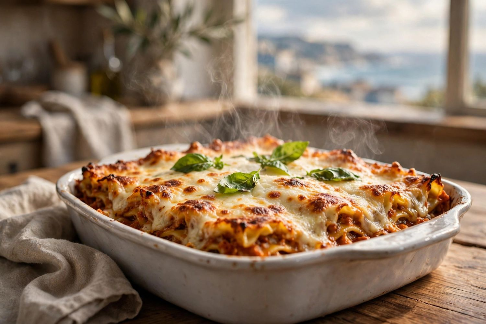
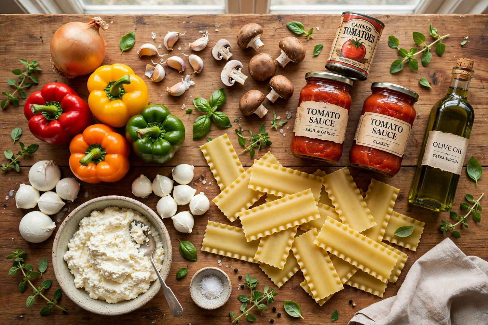
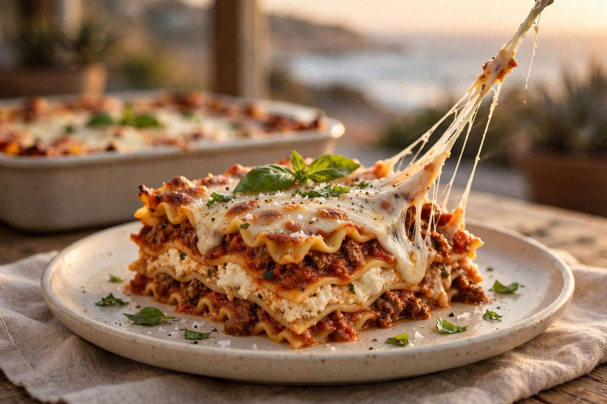

Mercedes' recipe, written down the way she makes it.
Feeds 8–10 people

Fresh out of the oven — golden mozzarella, basil, and coastal light.
Ingredients

32 oz whole milk ricotta
32 oz fresh mozzarella (not shredded)
1 red, 1 yellow, 1 orange & 1 green pepper, diced
1 sweet Vidalia onion
8 cloves garlic
8 oz fresh mushrooms
8 sprigs fresh basil, chopped
3 sprigs fresh oregano, chopped
1 can Marzano tomatoes (14.5 oz)
2 cans diced fire-roasted tomatoes (14.5 oz each)
2 jars Carbone spaghetti sauce (24 oz each)
1/4 cup tomato paste
1 cup ketchup
1 package lasagne noodles — cooked first
2 lbs ground beef or Impossible
Maldon sea salt, to taste
Cracked black pepper, to taste
Lawry's garlic salt, to taste
Mercedes' note: cook the noodles first. Tomato cans are 14.5 oz each, and the Carbone sauce comes in 24 oz jars.
Method
Cook the lasagne noodles first, following the package directions until just tender. Drain and lay flat so they don't stick.
Drain and blot the fresh mozzarella; drain any pooled whey from the ricotta. Set out two deep 9 × 13-inch pans.
Brown the beef or Impossible in batches, then set aside. Cook the mushrooms until their water evaporates. Soften the onion and peppers, add the garlic briefly, then cook the tomato paste for 1–2 minutes.
Return the meat and vegetables to the pot. Add all the tomatoes with their juices, both jars of Carbone sauce, the ketchup and the oregano. Simmer gently 20–30 minutes, keeping the sauce generous and pourable. Stir in some basil toward the end and season to taste.
Mix the ricotta with chopped basil and black pepper. Spread sauce over the bottom of each pan, then layer: cooked noodles, sauce, ricotta, mozzarella. Repeat, reserving some mozzarella for the top. Leave a little headroom.
Cover tightly with foil and bake at 350°F for 60–90 minutes, checking from 60 — the center should reach 165°F.
Uncover, add the reserved mozzarella, and bake 10–20 minutes more until browned. Rest 20–30 minutes before cutting.
Refrigerate leftovers within 2 hours; keep 3–4 days and reheat to 165°F.

The slice — layers of pasta, sauce, ricotta and mozzarella.